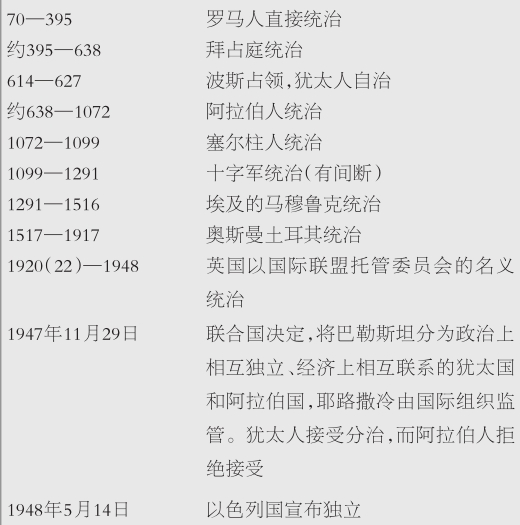
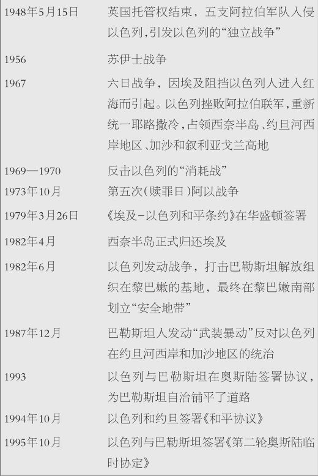
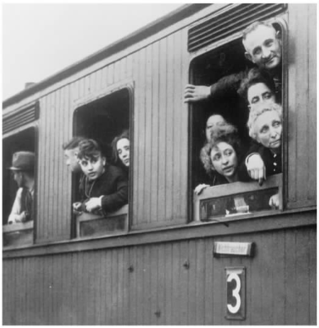

所有宗教在20世纪都受到了冲击。新的科学发现和历史批评不断对经文的真理性和“真实性”提出种种质疑，而这种情况在近代早期就出现了。西方政权日益世俗化，宗教的权威逐渐衰落。人们的价值观也发生了变化。受到重视的是，不分种族、肤色、性别和宗教，追求平等与普遍的人权；对正确教义的追求被视为既不重要，也无法企及。被视为理所当然的是，只要不损害别人的利益，个人有自由去走自己的路，甚至在性问题上也是如此。
大量民众放弃了有组织的宗教生活，一方面因为人们发现宗教在理性上站不住脚，另一方面因为宗教无法满足情感的需要，最主要的是因为宗教的要求妨碍了个人自由，而个人自由被视为基本的人权。
如果说西方基督教受到的影响最大，那么，西方的犹太教所受冲击不过稍稍次之，因为两者在滋养了现代性和启蒙运动的土地上，都建有自己的教堂。
同时，宗教又表现出更强的生命力和适应性，超出了人文主义者一百年前的预料之外。甚至在苏联，七十年的无神论宣传与对宗教的嘲讽也没能根除人们的宗教情怀。犹太世界中，20世纪上半叶，人们普遍认为哈西德教派的死期即将到来，其他正统派犹太教也将紧步其后尘，然而，20世纪的后半叶，哈西德教派获得了复兴，甚至在很大程度上削弱了其他正统派社团，“重获新生”的犹太人发现了他们的宗教之根，“重归犹太教”运动也获得了能量。
犹太教和其他宗教同样承受着来自知识、社会以及道德等方面的压力，也以类似的方式发出了回应。然而，全世界犹太人被卷入了20世纪两大事件的中心，这两大事件以独特的方式影响了他们。其一是纳粹大屠杀所造成的巨大的精神创伤。1933至1944年间，中欧约六百万犹太人遭到侮辱和屠杀。其二是以色列建国。
本章将简要地回顾一下20世纪犹太教思想发展变化的四个方面。
犹太复国主义，即以色列民回到以色列地的观点，很明显根植于《圣经》。在《圣经》中，一代代先知安慰被掳入巴比伦的犹太人，宣称他们会回到祖国。1937年，时值英国主持“国际联盟巴勒斯坦托管委员会”，大卫·本·古里安面对皮尔委员会宣读他的声明：“并非托管决议是我们的《圣经》，相反，《圣经》才是我们的托管决议。”大卫·本·古里安在1948年成为以色列的第一任总理。
本·古里安虽然深爱《圣经》，却是一个世俗的犹太复国主义者（见前文）。论及政治意义上的现代犹太复国运动时，犹太教神学家们常常自相矛盾。有些神学家，比如雷夫·库克（亚伯拉罕·伊萨克·库克，1865—1935，近代巴勒斯坦第一位大拉比），就是犹太复国运动的缔造者；他们视现代以色列建国为《圣经》预言的实现，或者至少是已经开始实现。其他神学家，比如索特玛的哈西德教派，认为只有在救世主弥赛亚领导下建立一个国家，并依照“真正的”《托拉》的统治，才算是实现了《圣经》的预言；现代的以色列不符合这个标准。
以色列/巴勒斯坦
公元70年罗马人占领耶路撒冷之后的政治史
《圣经》规定以色列国的疆域在约旦河两岸，但根本不可能确然无疑地划定该国的疆界。“巴勒斯坦”之名也是指约旦河两岸的区域。现代以色列只有《圣经》应许领土的约九分之一；其余的领土包括约旦、“被占领地区”（现在由巴勒斯坦自治）以及黎巴嫩与叙利亚的部分地区。


许多犹太人，包括世俗的犹太人，认为以色列建国就是实现了犹太人民的“民族”期望；数千年来他们处于少数地位，受寄居国主流社会排挤，在所居住的国家里很多情况下实际上得不到完整的公民权，现在，他们觉得自己终于“回家”了，能在独立国家的正常限度内支配自己的命运了。对受迫害的犹太人而言，以色列就是安全的港湾；如果纳粹大屠杀期间已存在以色列国的话，他们就有乞援之处了。而且，以色列建国之后，犹太人可以摆脱少数群体身份所带来的阻挠和束缚，过上履践圣约的犹太生活。
在近二千年中，包括拉比犹太教的整个形成期在内，犹太人缺乏政治独立和政治权力，这样，犹太教神学家便不得不为“政教”关系中出现的大量问题寻求答案，这些问题在之前并未在实际生活中出现过。
在当代的以色列，存在着许许多多激烈的论战。
在多大程度上敦促民众服从宗教准则才是正确的做法？民主选举出的立法机构在哪个层面上可以给宗教强制划下界限呢？
婚姻是应该继续由宗教法庭管辖，还是应该建立世俗的婚姻登记制度？
对于少数派，包括对自己的信念“持不同见解的人”在内，法律面前人人平等意味着什么？特别是，改革派和保守派拉比为什么不能像正统派拉比一样有权主持婚礼，或者（就此事而论）为什么不能像基督教和伊斯兰教神职人员一样？
现状
以色列的法律体系基本上是世俗的产物，继承自英国托管时期。以色列没有成文宪法，国家与教会之间的关系以四个因素为基础：
1.犹太教安息日及节庆日就是国家公共假日。
2.犹太教规定的“可食之物”即为公众习俗的标准。
3.个人事务（结婚、离婚以及继承的某些方面）服从拉比法庭的裁决。（非犹太人的个人事务由他们自己的宗教法庭或一般法庭管辖）
4.公立学校既开设世俗课程，也开设宗教课程。（同样，其他宗教社团也有自己的教育机构。）
1980年7月23日，以色列议会颁布法令，宣布：“只要法庭发现有待解决的问题无法援引法规或司法判例，并且无法以类推法裁决，就可以按照以色列自由、公正、平等与和睦共处的原则予以解决。”
对流产、医学试验和尸体解剖之类的问题，传统的犹太律法严加限制，那么现在应该怎么做呢？
怎样与不同信仰的国家建立外部关系？
世间有“正义战争”之类的事吗？如果有，发动“正义战争”的前提条件是什么？“纯洁武器”这个新概念就是讨论“正义战争”问题的结果，特别要求武装人员要甘冒奇险，避免伤害非战斗人员，尽量减轻敌方的伤亡。
一个国家应该以什么方式、在什么情况下向其他国家输送武器或者提供救济呢？
所有的犹太人都必须住在以色列吗？
以色列人，无论是否信仰犹太教，都将《圣经》和拉比文献当做以色列民族历史的组成部分，世俗的和信教的以色列人拥有的这份共同遗产，不但没有消弭，反而强化了纷争的激烈性，因为他们的解读方式有天壤之别。态度悲观者认为，如果不是因为军事防卫需要合作，宗教与世俗之间的争议就会撕裂这个国家；目前，结果尚不能确知，但无疑局势非常紧张。
反思纳粹大屠杀的神学在1970年代发展成为一个流派，然而，犹太人对邪恶与苦难的态度以《圣经》内容为基础，这种态度一直是犹太神学永恒不变的主题。
“尊上帝之名为圣”原则规定，犹太人必须准备好殉教，不能同谋杀人，放荡淫逸，或崇拜偶像。值得一提的是，许许多多犹太人在纳粹大屠杀的高压之下，仍然保持高尚的节操，遵照哈拉卡（宗教律法），拒绝与压迫者合作。他们用生命见证了上帝的存在，以及对上帝的忠诚。也有一些人不是那么坚定；所有犹太人都是受害者，但并非所有犹太人都是殉道者。
埃弗拉伊姆·奥什里拉比在立陶宛隔都考纳斯的大屠杀中幸存下来。在考纳斯，人们向他提出各种问题。他把这些问题以及自己的答复，写在暗地里从水泥袋上撕下的纸上，藏到食品罐中，战争过后又找了回来。文稿中说：“隔都的日常生活、我们吃的食物、我们共同生活的那些拥挤的住处、裹在脚上的破布、身上的虱子、男女之间的关系——所有这一切都包含在每个问题的细节中……”

图13 这些犹太人可能被告知去“度假营地”；事实上，他们是去往史上最大的、最惨无人道的速杀死亡工厂。死于奥斯威辛集中营的人估计有二百万到四百万之多。其中约有二十万不是犹太人，包括波兰知识分子和爱国者；其余都是犹太人。
文稿中有这样的题目：“犹太人被迫撕碎《托拉》卷轴”、“为服苦役的犹太人读安息日《托拉》”、“为殉道者祈福”、“用洗礼证书自救”、“隔都的避孕用品”、“悔悟的囚犯头子”。下面简短的一问一答，表现了哈拉卡如何将宗教意义赋予受难者的生与死。
“我们这些考纳斯隔都里的犹太人……受德国人奴役；被迫劳作，夜以继日，不得喘息；饿得要死，得不到任何报酬。我们的仇敌德国人还下令把我们全部处死。我们都不能幸免。绝大多数人都得死掉。”那么，还有必要按照惯例在晨祷时诵读祷告词，感谢那个“没有让我们成为奴隶”的上帝吗？
奥什里答道：“祷告文最早的一个评注者指出，写这篇祷告文赞美上帝，不是因为上帝赐予我们身体的自由，而是因为上帝赐予我们精神的自由。因此，我决定，在任何情况下我们都不可以跳过或改变这种神恩。相反，尽管身陷囹圄，我们比任何时候都更应该诵读神恩，向敌人表明，我们这个民族在精神上是自由的。”
传统对苦难的解释令人信服，不仅仅是因为我们有强烈的负罪感，而且在于我们坚信有来生。这种信仰，不管是表现为肉体的复活、精神永生，还是表现为两者的某种结合，在正统派犹太教义中都是最重要的。有些犹太人，也许是受神秘哲学的影响，用转世的概念来解释清白无辜的人，比如孩子所经受的苦难。
有些人认为，纳粹大屠杀是上帝对以色列的公正审判，以色列对《托拉》圣约没有信仰，他们叛教、被异族文化同化、改革犹太教，都证明了这一点；大多数犹太人认为，这种言论对死者和幸存者都是污辱。
“毫无疑问，可以明确的是神圣的上帝是宇宙唯一的主宰，我们必须接受上帝充满怜爱的审判……”匈牙利拉比什穆埃尔·大卫·温加尔的话准确地表达出那些犹太人的淳朴信仰，他们走进毒气室，口中念诵着“我相信”（迈蒙尼德所确立的信仰声明）或“以色列啊，你要听”（《申命记》，6：4—9，宣称上帝是独一的主，犹太人有责任爱祂，守祂的圣诫）。大难临头，他们困惑不解，但他们的虔诚战胜了邪恶，按传统的说法，他们已经作好准备去“尊崇上帝之名为圣”。甚至在灾难最深重之时，他们还在表达对上帝的爱。
纳粹大屠杀的历史真相
很多人喜欢用希伯来语单词“浩劫”（Shoah）来表示纳粹分子妄图灭绝犹太民族，因为这个词比“大屠杀”（Holocaust）少一点神学色彩。
1933年，希特勒一上台，就按照先前的承诺，开始颁布反犹法令；只要祖父母辈中有一位犹太人，这个人在种族上就被界定为犹太人。犹太人写的书被烧掉，犹太人的生意遭抵制，犹太人在各行各业都遭到排斥；1935年的《纽伦堡法》加强了这种立法，并将之推广到奥地利和捷克斯洛伐克。在“水晶之夜”，即1938年11月9日夜到10日黎明，犹太教会堂被焚毁，犹太人的店铺遭洗劫，成千上万的犹太人被押往集中营。
德国入侵波兰之后，犹太人被赶入各个隔都，许许多多犹太人被杀，有的则死于严酷的生活环境之中。
1942年，在柏林的万塞，纳粹分子决定实施“最终解决方案”，即从肉体上消灭所有犹太人。波兰的奥斯威辛、德国的贝尔森和中欧的其他地方建立了集中营，犹太人被送往那里，惨无人道地杀害，一般先用毒气杀害，再集体焚尸灭迹；犹太人中身强力壮者，在被杀之前都要像奴隶一般被强制劳动。德国纳粹制定了一套系统的政策，对犹太人极尽羞辱和诋毁之能事，然后再残酷地杀害。总共约有六百万犹太人遇害，差不多占欧洲犹太人口的三分之二，世界犹太人口的三分之一。
也有其他民族遭劫；但只有犹太人，也许还包括一些吉卜赛团体，纯粹是因为“种族”原因被挑出来试图完全消灭。
在死于浩劫的正统派遇难者心目中，天启的感觉很强烈，而且这种感觉现在越来越强烈。他们认为这场浩劫预示着弥赛亚来临与最终得救。宗教意义上的犹太复国主义者把这场浩劫和围绕以色列建国所发生的冲突，看成是“弥赛亚降生前的阵痛”。
“不以面目示人”的上帝这一观念越来越强烈，也许是因为它被神秘主义者（喀巴拉派）全面发展了。它与圣经评注中的上帝观念相关联，说得更准确些，即与神的显现相关联；“流亡”时上帝与以色列人同在，因为《诗篇》中说，“他在患难中，我必与他同在”（《诗篇》，91：15）。
埃利·威塞尔也许是研究屠犹浩劫最知名的作家，他的作品也最通俗易懂。他的小说是对那场浩劫“叙事形式的诠释”。小说《夜》描述了一个孩子被纳粹分子吊死在绞刑架上，因而也回答了一个尖锐的问题——“上帝在哪里？”人们看到，苦难使人得救。他的剧作《审判》表达了对上帝无比的愤怒；上帝自己受审，然而到最后当祂被判有罪时，“法官”站起身说，“我们现在祷告吧”。
理查·鲁本斯坦反思屠犹浩劫之后，拒斥上帝就是“历史之主”这一传统观念。上帝只是未能介入进来，挽救他的信众。鲁本斯坦不相信无神论，但他敦促基督教徒和犹太教徒以异教或亚洲宗教模式为基础，信奉非有神论形式的宗教，在圣殿祭祀的象征性中寻找深刻的精神资源。
埃米尔·法肯海姆的神学观基础，实际上就是不认为屠犹浩劫的受难者身上没有现实希望：“纳粹大屠杀之后，哲学意义上的‘得康’（Tikkun）［即‘补救’、‘复兴’］是可能的，因为在纳粹大屠杀过程本身，哲学意义上的复兴已然出现，不管多么零碎，不成体系”；对这个复兴过程来说，以色列的重生，以及与自我批评的基督教展开新的建设性对话，这些必不可少。法肯海姆得享盛名，还因为他曾下过一个断言：在第613条传统诫命之外，还应该加上第614条——对于那些幸存下来的犹太人而言，要记住，永远不要对上帝绝望，以免将死后的胜利拱手让给希特勒。
索洛韦伊奇克对上帝和历史的理解更具诗意、更传统：“在恐怖之夜的子时……在一个掩盖一切的黑夜……一个疑惑和叛教的深夜……响起敲门声，那是我们深爱着的神在敲门……犹太生活的七个大逆转，七个奇迹开始了——政治、军事、文化、神学、生活观、公民权和以色列国的新兴。”
令人惊讶的是，反思纳粹屠犹的神学家作出的反应，与那些出自早期传统文献中的答案竟然如出一辙 ；多数答案都是经受苦难而得救赎这一主题的不同形式，其洞见得自现代心理学和社会学反应，用于分析犹太民族的现状，往往相当敏锐。甚至包括鲁本斯坦在内的那些反应，都要求彻底修改传统的上帝观念，这些反应遵循了一种更古老的神学思潮，该思潮是由反驳尼采哲学而直接引发的。
每逢星期一，犹太人为什么要读《诗篇》第48章，赞美上帝救耶路撒冷出亚述侵略者之手？伊斯雷尔·利普许茨（1782—1860）闻名于世是因为他的《〈密西拿〉评注》，也因为他经常连续三天斋戒。他认为，礼拜日读创世赞美诗（《诗篇》第24章），星期一读《诗篇》第48章，用以表明上帝创世之后，并没有“回到天上休息，不理睬祂的子民”，而是从天堂屈尊降临西奈山，给以色列人启示。
利普许茨的这种说法包含了两种尖锐的批评。他拒绝犹太教徒（以及基督教徒和伊斯兰教徒）中世纪宗教哲学的主要观点，即上帝就是抽象的第一推动力或存在的本源，无限地超出我们的理解能力。他同样也排斥18世纪广为流行的自然神论哲学，这种哲学承认上帝的存在，但认为上帝无限地远离人类世界，对人类的日常生活漠不关心，对各宗教之间争吵不休的教义也了无兴趣。利普许茨心目中的上帝容易接近（虽然也有些苛求），非常关切“祂的子民”的日常生活，因而屈尊把最好的生活方式启示给人类。
利普许茨重塑了《圣经》中的上帝和拉比传统，这是一个“食人间烟火”的上帝，与人类深切相关。大多数后世的犹太思想家沿袭这一思想脉络，忽略了中世纪哲学家们所提出的对上帝存在的抽象、界定和证明。
但是，一旦论及一个关心人类、与人类相互影响的上帝，就赋予了祂一种人的品格。对改革派犹太教思想家，如赫尔曼·科恩（见第98页）和利奥·拜克而言，或者对“现代正统派”拉比，如萨姆森·拉斐尔·希尔施而言，上帝就是道德意义上的上帝；他们将《托拉》——赫希甚至将祭祀制度的大多数玄奥细节——解释为主要关乎道德价值观，因而以色列的使命就是向世界宣布道德规范。
马丁·布伯和埃马纽埃尔·勒维纳斯将信仰置于与上帝的关系之中讨论。布伯声称，生活的一切就是相遇，重要的是处理好你与上帝、与人之间的关系（要讲“我——你”之间的直接关系，而不是“我——它”的间接关系）；这种关系是上帝启示的基本要素，道德行为即源于此；法律与规则无力获得启示，注定难当此任。
此外还有更多有关上帝的概念。有认为上帝不是超自然的，其存在仰赖犹太教文明的发展来表达（卡普兰）；哈拉卡中的上帝是先验的，其无上的启示通过完美的、先天的法律制度实现，可以面对和消弭科学界与宗教界之间的分歧（索洛韦伊奇克）；“人格化的”上帝，与我们的感觉有共鸣，分享我们的希望与快乐，分担我们的悲痛与苦难（海舍尔）；圣约中的上帝，其道德的和宗教的要求已借助祂与宗教社团的圣约关系而广为人知（博罗维茨、诺瓦克、哈尔特曼）；未介入人世的上帝，祂没有救受害者出纳粹大屠杀的灾难，只是一言不发、显然无所作为，而我们却从中发现自己内心世界里的精神性（鲁本斯坦、库什纳）；甚至还有一位“动辄破口大骂的上帝”（大卫·布卢门撒尔），我们必须与他寻求和解，像与父母和解一样，我们在他的手底下遭受了痛苦。
不论是哪一个，上帝就在那里，活生生的，有影响力。祂还活着。下面我们就谈一谈这一点。
在18世纪后期的欧洲，紧随启蒙运动和工业革命之后，经济变化与社会变迁引发了妇女权利运动，也叫女权主义或者妇女解放运动；法国大革命时期的妇女共和俱乐部呼吁，“自由、平等、博爱”应该适用于所有人，不分性别。
科学研究表明，男女间许多所谓的差别都是文化的产物，而不是由生理决定的特征。语言用阳性指代集体形式，这本身就被视为在延续女性的“隐形状态”或“他者身份”，让女性附属于男性。女性团体力主男性分担家庭角色，主张立法认可堕胎和承认女同性恋者的权益。这一切是怎样冲击犹太教的呢？
《圣经》、《塔木德》和近代之前的犹太教认为，父权制和专制的社会制度是理所当然的。《创世记》第2至3章的创世故事中说，夏娃是用亚当身上的一根肋骨做成的，而且受引诱吃了禁果。这个故事说明理想乐园是怎么丧失的，而且证明了让夏娃服从于亚当的权威是正当的。只在某些“女性专属”的领域（比如母系氏族社会的族长，以及米利暗姆、路得、以斯帖），或者作为某些特殊的个体，或善（女士师底波拉、女先知户勒大）或恶（女王亚他利雅），女性才显得出类拔萃或颇具影响力。至于上帝，则总是男性。
但是，《创世记》第1章第27节说得清清楚楚：“于是，神照着自己的形象创造人；就是照着他的形象创造了人；他所创造的有男有女。”这就是说，利用我们的上帝观念规范人的行为，我们不应该区分男人和女人。同样，拉比“模仿上帝”的构想，就是把与女人相关的美德也与男性角色结合起来：“一个人如何才能像上帝那样行走呢？经上不是写着‘因为耶和华你的上帝是一团烈火’吗？但是，要学上帝的样子。像祂一样给赤身的穿上衣服……像祂一样探访病人……安慰孤寡……埋葬死者……你也该这样。”这里实际上根本没有特别男性化的品质。上帝劝诫我们要模仿的，是爱和怜悯，而非由正义引起的复仇或强制行为。
如果说在犹太传统中，关于女性上帝形象的描述很有限，那么，创造一个新形象有意义吗？丽塔·格罗斯力主，祷告时吁求上帝的耳熟能详的形式应该转变为阴性形式。比如，应该说“上帝独一，感谢主（She）”，来取代现在的阳性用法。她还列举出五个基本的女神形象，需要译为犹太教术语：
·“对立面的偶合”，或者说“模糊象征主义”
·上帝圣母的形象，两个词必须同位结合在一起
·母性女神和文化女神，创造性的共生的两面
·赋予智慧、庇护学术和知识的女神
·主张性行为是神性的一个方面
她总结道：
重建派犹太教自1968年创立以来，一直主张男女间完全平等，在主张不分性别的宗教礼拜方面，比任何其他教派都走得更远。改革派犹太教已经逐渐实现了男女平等，许多改革派宗教集会都尝试过必需的祷告仪式改革；比如，祷告词“我们父辈的上帝，亚伯拉罕、以撒和雅各的上帝”变成“我们祖先的上帝，亚伯拉罕、以撒和雅各的上帝；撒拉、利百加、拉结和利亚的上帝”。保守派犹太教在继续忠诚于哈拉卡的同时，致力于实现男女平等；1983年，保守派决定授予女性拉比职位，造成了该派的分裂。
正统派犹太教在会堂依然保持男女分座，不让女性参加《托拉》诵读，不把妇女计入祷告法定人数，更不用说任用女性为拉比了，并且，正统派依然保留着传统哈拉卡中有贬低女性之嫌的其他方面。然而，正统派也不能不受妇女运动的影响；他们改进了女性教育机构，允许甚至鼓励妇女参加公共活动，而这些做法一般看来并不见容于哈拉卡。值得一提的是雅各之家运动和月朔节运动：雅各之家运动于20世纪早期源自波兰，目的在于发展女性教育，月朔节运动兴起得更晚，它鼓励女性组织祷告团体、接受教育，并且与其他团体一起采取有力措施在正统派犹太教社团中争取女性权益。